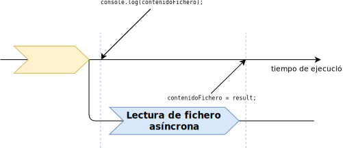

Programación asíncrona
Programación Declarativa Aplicada
Máster en Ingeniería Informática
Facultad de Informática
Universidad Complutense de Madrid
Máster en Ingeniería Informática
Facultad de Informática
Universidad Complutense de Madrid
- Operaciones síncronas y asíncronas
- Funciones callback
- Las funciones asíncronas son contagiosas
- Inconvenientes de la funciones callback
Operaciones síncronas y asíncronas
¿Qué es una operación asíncrona?
- Cuando un programa realiza una operación síncrona, el programa detiene su ejecución hasta que dicha operación haya terminado.
- En este caso, decimos que una operación síncrona es bloqueante, porque el programa queda «bloqueado» esperando a que la operación termine.
- Por el contrario, cuando un programa invoca una operación asíncrona, el programa continúa su ejecución mientras la operación se realiza.
Modelo asíncrono
- Node utiliza un modelo asíncrono de E/S con el fin de permitir el desarrollo de aplicaciones con alta capacidad de respuesta.
- Este modelo resulta muy útil en un contexto de aplicaciones web, donde un servidor web ha de procesar miles de peticiones por segundo.
E/S síncrona vs asíncrona
- Por ejemplo, supongamos que leemos el contenido de un fichero de manera síncrona:
Bloque 1 Lectura de fichero síncrona Bloque 2 - El
Bloque 2no se ejecuta hasta que se ha terminado de leer el fichero:
E/S síncrona vs asíncrona
- Supongamos que la lectura se realiza asíncronamente:
Bloque 1 Lectura de fichero asíncrona Bloque 2 - El
Bloque 2se ejecuta mientras se está realizando la lectura:

Lectura de fichero en Node.js
- El módulo
fsde Node.js proporciona operaciones para manejar ficheros.import fs from 'node:fs' - Dentro de este módulo hay dos funciones para leer el contenido de un fichero:
fs.readFileSync(fichero, opcs)
Lectura síncronafs.readFile(fichero, opcs, callback)
Lectura asíncrona
Lectura síncrona en Node.js
import fs from 'node:fs'
try {
const contenido = fs.readFileSync('ejemplo.txt',
{ encoding: "utf-8" });
console.log('Fichero leído correctamente:');
console.log(contenido);
} catch (err) {
console.log('Se ha producido un error:');
console.log(err.message);
}
Operaciones síncronas
- Bloquean la ejecución del programa mientras se ejecutan.
- Devuelven el resultado de la operación.
- En caso de error, lanzan excepciones.
Lectura asíncrona en Node.js
Si la ejecución del programa continúa sin esperar a que la operación de lectura asíncrona termine...
- ¿Cómo sabemos cuándo ha terminado la operación?
- ¿Cómo obtenemos el resultado de esa operación?
Modelos de cómputo asíncrono
- Modelo basado en funciones callback.
- Modelo basado en promesas.
- Modelo basado
async/await.
Funciones callback
Funciones callback
Una función callback es una función definida por el programador, pero que no está pensada para ser llamada directamente por este, sino por otro componente del sistema.
Función readFile() asíncrona
fs.readFile(fichero, opcs, callback)
- La función
readFile()asíncrona recibe un tercer parámetro, que es una funcióncallback. readFile()llamará a la funcióncallbackcuando haya finalizado la lectura del fichero.- La función
callbackdebe ser definida por el programador que llama a la funciónreadFile(), y en ella se determinan las acciones a realizar a partir del resultado de la operaciónreadFile().
Función readFile() asíncrona
fs.readFile(fichero, opcs, (err, result) => {...})
- La función callback recibe dos parámetros:
- Un objeto de la clase
Error, en el caso en que la lectura haya fallado.
Si no ha fallado, este parámetro toma el valornull. - El contenido del fichero leído, en el caso en que se haya leído correctamente.
Si la lectura ha fallado, este parámetro toma el valorundefined.
- Un objeto de la clase
Lectura asíncrona en Node.js
import fs from 'node:fs'
console.log('Antes de readFile');
fs.readFile('FichTexto.txt',
{ encoding: 'utf-8' },
(err, contenido) => {
if (err) {
console.log('Se ha producido un error:');
console.log(err.message);
} else {
console.log('Fichero leído correctamente:');
console.log(contenido);
}
}
);
console.log('Después de readFile');
Lectura asíncrona en Node.js
Resultado de ejecución:
Antes de readFile
Después de readFile Se imprime esto antes de la función callback!
Fichero leído correctamente:
...
Operaciones asíncronas mediante funciones callback
- No bloquean la ejecución del programa.
Porque el programa continúa su ejecución mientras la operación asíncrona se realiza. - No devuelven ningún valor.
El resultado de la operación se pasa como parámetro a la función callback. - No lanzan excepciones.
En caso de error, es la función callback quien recibe la excepción como primer parámetro.
Sobre la concurrencia
- Aunque las operaciones asíncronas se realizan de manera concurrente, el código JavaScript siempre se ejecuta en una única hebra.
- Cuando una operación asíncrona finaliza e invoca a la función callback, el código de esta última no se ejecuta de manera concurrente con el resto del programa JavaScript, sino que se guarda en una cola, esperando a que finalice el código ejecutándose actualmente.
Un error frecuente
¡Cuidado con el siguiente código!
let contenidoFichero;
fs.readFile('FichTexto.txt', { encoding: 'utf-8' },
(err, result) => {
if (!err) {
// Asignamos el contenido a la variable
// externa
contenidoFichero = result;
}
});
console.log(contenidoFichero); // ¿Qué se imprime aquí?
Un error frecuente

- La sentencia
console.log(contenidoFichero)se ejecuta antes de la funcióncallbackpasada como parámetro areadFile(), aunque la lectura se haya hecho de manera instantánea.
Moraleja
Si un fragmento del programa depende del resultado de una llamada asíncrona, no debe ir tras dicha llamada:
fs.readFile('fich.txt', (err, result) => {
...
});
// hacer algo con 'result'
Debe ir dentro de la función callback:
fs.readFile('fich.txt', (err, result) => {
// hacer algo con 'result'
...
});
Las funciones asíncronas son «contagiosas»
Las funciones asíncronas son «contagiosas»
- Si una función
fhace uso de otra funcióngasíncrona, entoncesftambién ha de ser asíncrona, salvo que:- el resultado de
fno dependa del resultado deg, y además, - la ejecución de
fpueda finalizar sin queghaya terminado.
- el resultado de
Ejemplo
- Queremos implementar una función
numLineas()que reciba el nombre de un fichero y devuelva el número de líneas que contiene:function numLineas(fich) { fs.readFile(fich, {encoding: 'utf8'}, (err, result) => { if (err) { console.log('Error al leer el fichero'); } else { const numL = result.split(/\n\r|\n|\r/).length; ... ¿Cómo devolvemos numL? } }) }
Ejemplo
- No podemos realizar lo siguiente, ya que
returncorresponde a la función callback pasada areadFile, no a la funciónnumLineas:
function numLineas(fich) {
fs.readFile(fich, {encoding: 'utf8'}, (err, result) => {
if (err) {
console.log('Error al leer el fichero');
} else {
const numL = result.split(/\n\r|\n|\r/).length;
return numL; Incorrecto
}
})
}Ejemplo
- La función
numLineasha de recibir una funcióncallbacka la que pasará el resultado. - Por tanto,
numLineasha de ser asíncrona. - Utilizando el mismo convenio que el resto de funciones asíncronas, la función callback tendrá dos parámetros:
erryresult.
Ejemplo
function numLineas(fich, callback) {
fs.readFile(fich, {encoding: 'utf8'}, (err, result) => {
if (err) {
callback(err); Llamada a callback con error
} else {
const numL = result.split(/\n\r|\n|\r/).length;
callback(null, numL); Llamada a callback con resultado
}
});
}
Ejemplo
Uso de numLineas:
numLineas('ejemplo.txt', (err, n) => {
if (err) {
console.log('Error al leer el fichero');
} else {
console.log(`Número de líneas: ${n}`);
}
})
Inconvenientes de las funciones callback
Inconvenientes de las funciones callback
- El uso de funciones callback para manejar funciones asíncronas es el más sencillo conceptualmente, pero tiene varios inconvenientes:
- Excesivo anidamiento de callback cuando se ejecutan varias funciones asíncrona en secuencia (callback hell).
- Requiere propagar explícitamente los errores producidos.
- Si hay que ejecutar un número indeterminado de operaciones asíncronas, la complejidad es aún mayor.
- Las promesas (promises) de JavaScript solucionan algunos de estos inconvenientes.
Bibliografía
- A. Rauschmayer
JavaScript for impatient programmers (2022)
Capítulo 39
https://exploringjs.com/impatient-js/index.html -
Módulo
fs
Node.js documentation
https://nodejs.org/docs/latest-v16.x/api/fs.html#file-system